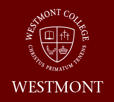

Alexander Standke
This is my personal website! Here you can learn all sorts of things about me!
About Me | Work Experience | Open Source Projects
About Me
I'm just learning about the internet, so this will be where I put up all of my fun tests and experiments! Of course, this page is...

I'm a full stack software developer writing well tested code in Ruby on Rails and Javascript.
Work Experience
|
Appfolio Property Manager 2015 - Present I work as a full stack software engineer at Appfolio contributing to the property management workflow software. My responsibilities include writing software, teaching new hire classes, writing and prioritizing user stories, and partying hard. |
|
Outside Open 2013 - 2015 I worked as a developer and IT professional for Outside Open, writing software solutions for local businesses and helping with network installations and general IT work. |
|
Westmont College 2011 - 2013 As a software developer intern for Westmont College, I wrote workflow applications for various departments to help improve their processes. Apps I wrote (that remain in use today!) include an application for creating, assigning, and completing work orders, an application for inventory management and checkout of AV equipment, and a system for oauth using google apps for education. |
 |
Open Source Projects
I do a lot of work in open source. Mostly relating to media consumption and torrent management. Click here to see my GitHub profile!